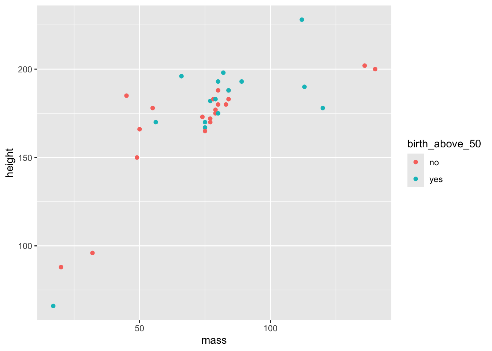

x <- c(1,2,3,4,5)
mean(x)[1] 3For the workshop we will be using R. To be able to participate properly, it is advisable to install a number of packages on your own PC beforehand, as well as to become familiar with the way I usually code in R. This document is a brief guide to help you prepare.
Bayesian estimation and analyses require some dedicated samplers that should be installed on your machine. The workflow that we will cover in the workshop relies on Stan software. Stan stands alone from R but can be called through R making use of two different ways. We will cover this more in the workshop.
For the workshop I will use the CmdStan chain and the package cmdstanr. Therefore, I would encourage you to download and install a working cmdstan and cmdstanr. The following vignette can help you accomplish this: https://mc-stan.org/cmdstanr/articles/cmdstanr.html
Normally if you follow the steps described in that vignette you will succeed in installing and testing your installation.
brmsFor the analyses we will rely on the amazing package brms. Installing this package is not that difficult, but maybe install before the workshop and start some exploring ;-)
tidyverseWhen I code I use the functional programming approach and a lot of the tidy principles (see below). The package tidyverse bundles a set of packages that are needed for this approach to coding. If you want to learn more on the whole universe of tidyverse you can explore the book of Hadley Wickham: https://r4ds.had.co.nz/
ggplot2Part of the tidyverse package is the ggplot2 package. Therefore it will be installed if you also install tidyverse normally. Nevertheless, I find it worth mentioning separately because I think knowing how to make graphs with ggplot2 is very handy even if you do not dive into bayesian analyses. A great resource to learn to visualize your data is the tutorial written by Cédric Scherer: https://www.cedricscherer.com/2019/08/05/a-ggplot2-tutorial-for-beautiful-plotting-in-r/!
He also blogs on creating great visualizations and has some nice talks that I think you can find on YouTube!
patchworkI mention this package separately as well. patchwork allows you to combine different plots created with ggplot2. This package should be installed on it’s own.
tidybayesThis package is a dedicated package to make use of the tidy principles when applying it to (results of) Bayesian analyses.
bayesplotWe will use visualisations a lot in Bayesian analyses to summarize the information of models and parameter estimation. bayesplot bundles a number of functions that make this visualizing much easier (although it uses ggplot2 under the hood so we could accomplish similar results just knowing ggplot2).
There are a great number of roads that will lead to Rome! Coding in R can be accomplished in several ways. This means that code can get messy as well! Therefore, I try to keep myself as much as possible to some rules that are described by what is called the tidy way of coding. Some basic things are key to this approach. I will shortly describe them here so you will recognize this way of working when we’re in the workshop.
When coding I make use of what is called the pipe operator (notice that you can only use this when you loaded the tidyverse package).
The pipe in R code is the following: %>%
What is nice about using the pipe operator is that you can read a piece of code from left to right focussing on the verbs (as Hadley Wickham will call it sometimes).
A short example.
Imagine you have a vector of numbers for which you want to calculate a mean: c(1,2,3,4,5).
There are different ways to do this in R.
A first one is doing it in separate lines of code:
x <- c(1,2,3,4,5)
mean(x)[1] 3For this easy example this would work fine. But a typical side-effect of working this way is that we create a lot of objects along the way. Here we created the object x that stored the values of the vector.
To avoid this we could combine all the code in one line by embedding functions:
mean(c(1,2,3,4,5))[1] 3One line of code and no storage of a new object. But this can get complicated if you want to combine a set of functions resulting in almost non-readable code!
Then there is the pipe operator:
library(tidyverse)── Attaching core tidyverse packages ──────────────────────── tidyverse 2.0.0 ──
✔ dplyr 1.1.4 ✔ readr 2.1.5
✔ forcats 1.0.0 ✔ stringr 1.5.1
✔ ggplot2 3.5.1 ✔ tibble 3.2.1
✔ lubridate 1.9.3 ✔ tidyr 1.3.1
✔ purrr 1.0.2
── Conflicts ────────────────────────────────────────── tidyverse_conflicts() ──
✖ dplyr::filter() masks stats::filter()
✖ dplyr::lag() masks stats::lag()
ℹ Use the conflicted package (<http://conflicted.r-lib.org/>) to force all conflicts to become errorsc(1,2,3,4,5) %>%
mean()[1] 3This is how to read this code:
c(1,2,3,4,5) %>% # create the vector and then
mean() # calculate the mean[1] 3So the pipe can be read as take (or create) A and then do B with the result. We could create a whole pipeline of functions to be applied in this way making use of the pipe operator (this becomes more clear in the next section when we shortly describe the dplyr verbs).
A tweet that I encountered gives a great analogy. Using the pipe you could write:
I %>% woke up %>% took a shower %>% got breakfast %>% took the metro %>% arrived at work %>% …
In a recent update of R they also introduced this idea of a pipe as a “native pipe”. This is written as |> and functions in a similar way as %>% with the advantage that it will also work outside the tidyverse. I’m slowly transforming all my material and code to make use of this native pipe. But as I am notoriously sloppy, the chances are high that you will encounter some old-fashioned tidyverse pipes in my code during the workshop…
I |> learned about the native pipe |> transformed my code |> potentially failed somewhere …
dplyr verbsWithin the tidyverse universe we can make use of a great package called dplyr for a broad spectrum of data-management functions. The functions provided in that package are also sometimes called verbs:
mutate( ) to do recoding etc;select( ) to select a subset of columns/variables;filter( ) to filter cases;group_by( ) to apply what’s coming afterwards for specific groups in the data by a grouping variable;arrange( ) to sort the data;summarize( ) to apply summarizing functions (like taking the mean etc.);rename( ) to rename columns;These functions can be combined in a single statement making use of the pipe operator.
Here are some examples on the use of these verbs applied to the built-in dataset starwars that is part of the tidyverse package.
Calculate the mean birth_year for all the characters:
starwars |>
summarize(
mean_birth_year = mean(birth_year, na.rm = TRUE)
) |>
print()# A tibble: 1 × 1
mean_birth_year
<dbl>
1 87.6Calculate the average height and the average mass by gender:
starwars |>
group_by(gender) |>
summarize(
mean_height = mean(height, na.rm = T),
mean_mass = mean(mass, na.rm = T)
) # A tibble: 3 × 3
gender mean_height mean_mass
<chr> <dbl> <dbl>
1 feminine 167. 54.7
2 masculine 177. 107.
3 <NA> 175 81 Now, let’s use the verbs to create a graph. We want to create a scatterplot with mass on the x-axis and height on the y-axis. Also, we want to add a third variable in the mix: whether the character’s birth year is hither than 50 or not (just for fun). Finally, we only want to show characters that have a mass lower than 200 and with a birth_year that is known.
starwars |>
# First filter the cases with a mass higher than 200 and for which birth_year is not NA
filter(
mass < 200,
!is.na(birth_year)
) |>
# Then we create a variable that has value yes if the character's birth year is above 50 and no otherwise
mutate(
birth_above_50 = if_else(birth_year > 50, "yes", "no")
) |>
# Select the necessary variables for the graph (not really necessary but this is to show this option)
select(
height,
mass,
birth_above_50) |>
# Create the graph
ggplot(
aes(x = mass, y = height, color = birth_above_50)
) + geom_point()